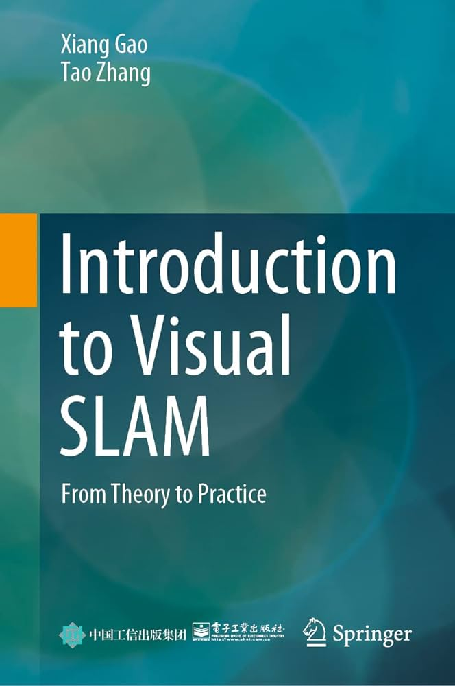

VSLAM course - Part 0x0 - Intro
Agenda of this lecture:
- What is this course?
- References
- What's VSLAM?
- Draft of the system
What is this course?
- Have fun!
- Tries to maximize accessibility in some sense:
- One simple approach from many possible, but complete.
- No black boxes (see all the way through abstraction).
- To hit this goal, we take opinionated choices.
- readability > performance - in real life, you need opposite.
- simulated data
- Don't just read it,
fight it!
References, tuned to your goals
This course is based on this book:

Our python code that we will in this course is here:
What's VSLAM:
SLAM - simultaneous visualization and mapping, but based on vision
given cameras (usually one or two, but could be more) and IMU (accelometer) figure out:
- where you are and
- how the environment around you looks like. "Where are the walls and how far are you from them"
the biggest practical difference between VSLAM and SLAM is that usually SLAM uses 2D or 3D LiDaR
LiDaR (which are laser distance meters)
gives you ~20 scans per second in 2d and 3d about where you are
- don't buy wholesale popular narratives "Lidar is an expensive crutch. Humans can navigate from vision perfectly well".
it is partially true, but the sitation is dynamic.
LidarS are becoming cheaper at an exponential pace. Cameras have their own complexities and blindspots.
Cameras can be hard to integrate and surprisingly expensive if you are going for quality.
- How does the system work?
- The robot has two cameras.
- The robot goes thru env in timesteps and each time we get picture from left eye and right eye.
- We could do one of 2 things at the given timestep:
- Firstly, it uses information from two cameras to estimate depth of the points it sees.
- we match up points from left image to points in the right image.
- we know how far apart are the eyes of the robot, and based on this we could figure out how far away from us are the things.
- Then, the robot remembers this information and call this reference frame "keyframe".
- so keyframe is a picture from two cameras, where we have estimated depth of points
- The special thing about the keyframe is that it has a bunch of 3d points attached to it.
- Then, as the robot moves on, we could compare the new information from left eye in reference keyframe to information that the left eye currently sees.
- It tries to figure out which elements of the image are the same elements as it has seen before and based on their movement, it figures out how much it has moved.
- As it gets away from the keyframe, the shared elements between
the keyframes current left eye image and past left eye image might get more
rare. We have moved on so we see other stuff. So we need to make a new keyframe
every now and then
- What things we will need to understand
- Ways to express poses mathematically: out of couple of possibilities, we will choose SO(3) SE(3)
- coordinate systems & coordinate transormations
- if this object is at position xyz when measured wrt to left eye, where is it wrt to right eye?
- pinhole camera system / equations
- rendering
- feature matching
- depth estimation
- gauss newton
- 3d pnp via
- putting it together - the actual VSLAM
More specialized refrences:
- steepest possible learning curve:
- go to ORB-SLAM3 source code and paper and start reading.
-
There's a book and library.
-
Factor Graphs for Robot Perception
- principled and mathematically grounded introduction into factor-based SLAM backend.
We are very grateful to the authors for free pdf. Thank you!
-
The library GTSAM
same authors (+ open source community, lab members and grad students)
- Probabilistic robotics by Thrun
- for SE(3), SO(3) there's many:
- Barfoot
- Naive Lie Theory
SOTA
- deep learning paper